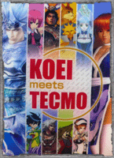

| KOEI 與 TECMO 設立 KOEI TECMO 控股公司 |
|

日本光榮 KOEI 與 TECMO 在 2008 年 11 月 18 日宣布簽訂關於經營合併的「合併合約」，將於 2009 年 4 月 1 日正式設立 KOEI TECMO 共同控股公司。 光榮與 TECMO 今年 9 月正式發表以統合兩社經營為目標的聲明，並設置經營合併委員會，啟動了經營合併的協議；今日兩間公司召開董事會確認此項協議，並製作有關股票轉移的「股票轉移計畫書」，正式簽訂有關兩間公司經營合併的「合併合約」。 雙方預定於 2009 年 1 月 26 日正式召開兩個公司的臨時股東大會，經正式同意後，預定 2009 年 4 月 1 日成立作為共同持股公司的 KOEI TECMO 共同控股公司，同時展開經營。光榮對未來新公司股票轉移比例為 1，TECMO 為 0.9。 日本光榮與 TECMO 對於雙方經營合併，表達「希望在兩個公司各自擁有優秀的技術力與經驗同時，能擴大在美國、歐洲、亞洲等海外市場客戶基礎與更加提升市場地位，並且擴大全球的收益」作為公司未來的目標。 據了解，KOEI TECMO 控股公司未來會長為 TECMO 會長兼社長柿原康晴、社長為光榮社長松原健二，董事則包括來自光榮的襟川陽一、襟川恵子與 TECMO 的阪口一芳。 |
||
| ||
|
8 月末 SQUARE ENIX 公司向 TECMO 公司提出“友好收購提案”，而後 9 月 4 日 TECMO 公司召開董事會宣布來自拒絕 SQUARE ENIX 公司的收購提案，並同時宣布與光榮公司共同設立“經營統合委員會”商討兩公司經營一體化相關事宜。 對此 SQUARE ENIX 公司向 TECMO 公司提出三點詢問事項：
對於以上詢問 TECMO 公司現在做出官方回答如下： SQUARE ENIX 公司所提出的提案不僅限時 1 周，而且從提案的內容來判斷進行協商的余地很小。另一方面來自光榮公司的提案不僅有充裕的時間進行經營一體化的協商，而且最終很可能提高本公司的企業價值，因此決定與光榮公司開始商討經營一體化相關事宜。 對於本次的合作光榮表示：「並不會特別提出金額方面的支援。至於其他部分雖然還未正式的下定案，但大概會以開始新的持股公司為目標，並在經營統合委員會中討論如何的分配股份等細節，因此在目前的情況下還無法具體的說明究竟要如何進行整個未來計畫。」 同時，光榮也預計將在 2 個月後，也就是 11 月初將會有更確切的實體企畫出爐。 而 TECMO 方面也表示：「光榮和 TECMO 分別在亞洲和北美的市場上佔有一席之地，性質上有所重複的部分也不多。再者，光榮在線上遊戲的開發進展非常的大，若能互相合作的話，勢必在未來會有更好的發展。」 此外，由於 TECMO 的前代社長與光榮的創業人襟川家族在公事之外的關係也非常良好，因此光榮社長松原健二相信在未來的統合經營上，會進行的非常的順利。 至於 SQUARE ENIX 則是表示，TECMO 已表明了完全不接受他們的合作案，但也未獲知其中的原因，認為持續與之交涉有其困難性，因此決定正式的撤回合作提案。 |
||
| ||
|
- 巴哈姆特新聞 - TECMO 關於之設立 KOEI TECMO 共同控股公司說明 - 光榮關於之設立 KOEI TECMO 共同控股公司說明 |
||
|

| － 1 / 1 － | ||||